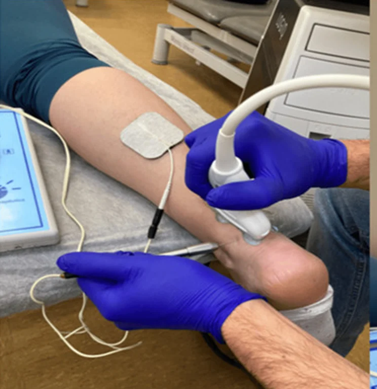

L'elettrolisi percutanea consiste nel far passare una corrente continua di bassa intensità dentro un tendine malato, attraverso un ago sottile guidato dall'ecografo. Si esegue in ambulatorio e si abbina sempre a un programma di esercizi.
È una tecnica recente, e le prove che la riguardano sono ancora poche e non concordi. Vale la pena sapere che cosa si sa e che cosa no prima di iniziare.

Quando si propone
Il campo d'uso sono le tendinopatie croniche che non sono migliorate con l'esercizio e la gestione del carico. La più studiata è quella del tendine rotuleo; seguono il dolore di spalla da sofferenza della cuffia dei rotatori, la fascite plantare, l'epicondilite e il dolore inguinale dello sportivo.[1]
Non esiste un accordo su quali condizioni, in quale fase e con quali dosi rispondano meglio: è una tecnica che si è diffusa più in fretta di quanto sia stata studiata.[1]
Com'è la seduta
Il medico individua con l'ecografo la zona del tendine alterata e vi porta un ago sottile, come quelli da agopuntura, seguendolo sullo schermo. Attraverso l'ago passa per pochi secondi una corrente continua di intensità molto bassa.
La manovra si sente: durante il passaggio della corrente è comune un dolore acuto e localizzato, che cessa appena la corrente si interrompe. Per questo la procedura si esegue a intensità basse e per tempi brevi, e in alcuni casi con un anestetico locale.
Le sedute sono in genere settimanali, per tre-cinque settimane. Sono sempre associate a esercizi, e questo non è un dettaglio organizzativo: è il punto su cui torna la maggior parte degli studi.[2][3]
Dopo la seduta, fai
- Esegui gli esercizi assegnati: sono la parte che fa il risultato.
- Metti in conto indolenzimento nella zona per uno o due giorni.
- Mantieni un carico graduale sul tendine, senza fermarti del tutto.
- Segnala febbre, arrossamento che si estende o dolore crescente oltre il secondo giorno.
Non fare
- Non riprendere lo sport ad alta intensità nelle ventiquattro ore successive.
- Non proseguire oltre le sedute concordate se non è cambiato nulla.
- Non sostituire con questa tecnica il programma di rinforzo: senza, non ha mostrato di funzionare.
Quanto funziona
Qui le sintesi disponibili non dicono la stessa cosa, e conviene saperlo.
Nelle tendinopatie in generale, aggiungere l'elettrolisi all'esercizio non si è dimostrato superiore all'esercizio da solo, né a una procedura finta accompagnata dagli stessi esercizi, a nessuna distanza di tempo.[3] È il risultato che pesa di più, perché confronta la tecnica con ciò che le sta accanto.
Nella sola spalla, invece, raccogliendo gli studi sulla cuffia dei rotatori l'effetto complessivo sul dolore risulta favorevole.[4]
I due risultati non si escludono: possono indicare che la tecnica rende in una sede e non in altre, oppure che gli studi disponibili sono troppo pochi e diversi per dare una risposta stabile. Allo stato attuale è ragionevole considerarla un'opzione da valutare quando l'esercizio da solo non è bastato, non un trattamento di prima linea.
Quando non si fa
- Portatori di pacemaker o di altri dispositivi elettrici impiantati.
- Infezione o lesione della pelle nella zona da trattare.
- Infiammazione acuta in corso.
- Disturbi della coagulazione non controllati e paura intensa degli aghi.
Richiedono valutazione individuale la gravidanza, i disturbi del sistema nervoso autonomo e le condizioni in cui la pelle guarisce male.[2]
Effetti indesiderati
Il disturbo principale è il dolore durante il passaggio della corrente, che è parte della procedura, e l'indolenzimento nelle ore successive. Si riportano inoltre piccoli lividi, reazioni di tipo vaso-vagale con sensazione di svenimento, e raramente un'infezione nel punto di ingresso.
Gli eventi avversi gravi non sono riportati negli studi disponibili.[4] Va però tenuto presente che il numero di persone trattate negli studi è ancora limitato, e che la sicurezza a lungo termine non è stata studiata.
Cosa è utile sapere prima
I parametri non sono standardizzati. Intensità, durata dell'impulso e numero di sedute variano molto fra i protocolli pubblicati, e non è stata dimostrata la superiorità di uno schema sugli altri.[1][2] Due trattamenti chiamati allo stesso modo possono essere cose diverse.
Il meccanismo è un'ipotesi. Si ritiene che la corrente provochi una reazione locale che favorisce la rimozione del tessuto alterato e la riparazione. Gli studi di laboratorio sono compatibili con questa idea, ma nell'uomo non è dimostrata.[1]
L'esercizio resta la cura. In tutte le sintesi disponibili il programma di carico progressivo è il trattamento con le prove più solide per le tendinopatie. L'elettrolisi, se usata, gli si affianca.
Da dove vengono queste informazioni
- Martínez-Silván D, Santomé-Martínez F, Champón-Chekroun AM, et al. Clinical use of percutaneous needle electrolysis in musculoskeletal injuries: a critical and systematic review of the literature. Apunts Sports Medicine 2022;57:100396.
- Pirri C, Manocchio N, Sorbino A, Pirri N, Foti C. Percutaneous electrolysis for musculoskeletal disorders management in rehabilitation settings: a systematic review. Healthcare 2025;13(15):1793. doi:10.3390/healthcare13151793
- Novaková T, Robles-Pérez R, Martinek M, et al. Percutaneous electrolysis for the management of musculoskeletal disorders: a systematic review with meta-analysis. Physiotherapy Research International 2026;31(4):e70352. doi:10.1002/pri.70352
- de la Barra Ortiz HA, Lange CC, Ronzio Ó. Percutaneous electrolysis and microelectrolysis for rotator cuff tendinopathy: a systematic review and meta-analysis. Journal of Clinical Medicine 2026;15(20):7983. doi:10.3390/jcm15207983
Scheda aggiornata il 16 novembre 2026. Prossima revisione prevista entro novembre 2028.
Per quali disturbi
Le schede dei disturbi per cui questo trattamento viene preso in considerazione, con quello che dicono le linee guida.
Cerca un'altra scheda
Un disturbo, un trattamento, o anche solo il punto che fa male: «formicolio», «tallone», «spalla congelata».